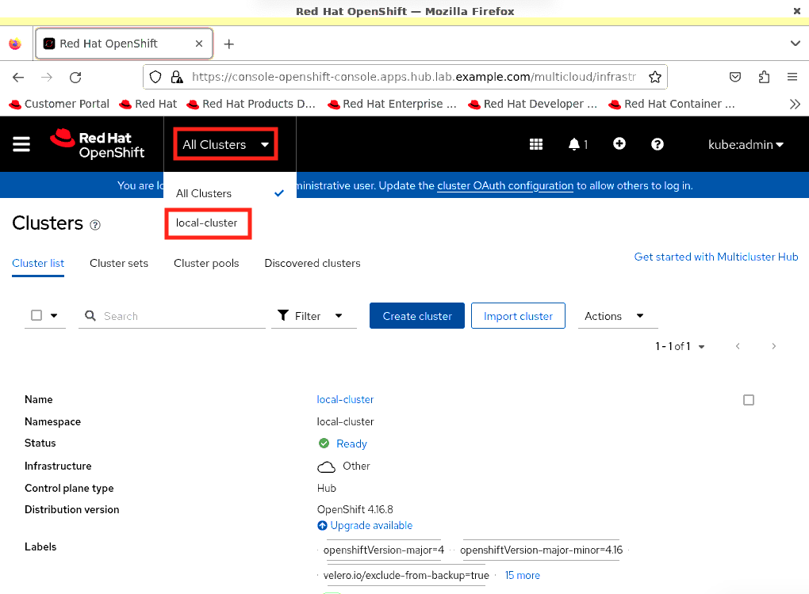

Install Operators and Configure Service
In this section, you will be installing additional operators and configuring service(s) needed for deploying Infrastructure and Tenant clusters.

Prerequisites
-
Verify Hub cluster is deployed successfully.
-
Access the Hub cluster via CLI and web console.
-
Verify multicluster engine for Kubernetes and LVM Storage operators are installed.
Sample output[root@hypervisor ~]# oc get operators NAME AGE lvms-operator.openshift-storage 58m multicluster-engine.multicluster-engine 58m
-
Ensure
hub.lab.example.comnode is inReadystatus and all cluster operators are available.Sample output[root@hypervisor ~]# oc get nodes NAME STATUS ROLES AGE VERSION hub.lab.example.com Ready control-plane,master,worker 30m v1.29.7+6abe8a1 [root@hypervisor ~]# oc get clusterversion NAME VERSION AVAILABLE PROGRESSING SINCE STATUS version 4.16.7 True False 16m Cluster version is 4.16.7
-
Set the storage class created by LVMS operator as default storage class.
-
Get the storage class.
oc get scSample output[root@hypervisor ~]# oc get sc NAME PROVISIONER RECLAIMPOLICY VOLUMEBINDINGMODE ALLOWVOLUMEEXPANSION AGE lvms-vg1 topolvm.io Delete WaitForFirstConsumer true 54m
-
Set the storage class as default by adding annotations as
storageclass.kubernetes.io/is-default-class: 'true'.oc edit sc lvms-vg1Sample output[root@hypervisor ~]# oc edit sc lvms-vg1 storageclass.storage.k8s.io/lvms-vg1 edited
-
Verify it is set to default.
Sample output[root@hypervisor ~]# oc get sc NAME PROVISIONER RECLAIMPOLICY VOLUMEBINDINGMODE ALLOWVOLUMEEXPANSION AGE lvms-vg1 (default) topolvm.io Delete WaitForFirstConsumer true 63m
Sample output[root@hypervisor ~]# oc get sc lvms-vg1 -o yaml allowVolumeExpansion: true apiVersion: storage.k8s.io/v1 kind: StorageClass metadata: annotations: description: Provides RWO and RWOP Filesystem & Block volumes storageclass.kubernetes.io/is-default-class: "true" creationTimestamp: "2024-08-26T10:55:00Z" labels: owned-by.topolvm.io/group: lvm.topolvm.io owned-by.topolvm.io/kind: LVMCluster owned-by.topolvm.io/name: lvmcluster-sample owned-by.topolvm.io/namespace: openshift-storage owned-by.topolvm.io/uid: d0b45cfd-44c8-44ba-98ad-82cb2f72c1ae owned-by.topolvm.io/version: v1alpha1 ...output omitted...
-
Install RHACM Operator
-
Access the
local-cluster.Click to
 -
Access the operator hub.
From left navigation pane, click .
-
In search window, search rhacm and select the
Advanced Cluster Management for Kubernetes. -
Click Install to open install options.
-
Keep all options as it is with no change in selected options and click Install to install the operator.
-
Click Create MultiClusterHub to create the resource.
-
Keep all options as it is with no change in selected options and click Create to create the resource.

-
Notice it goes into
Installingphase. -
After 3 to 4 minutes, notice the
Refresh web consolemessage on window. -
After 3 to 4 minutes, MultiClusterHub is in
Runningphase.
Enable the Central Infrastructure Management service
The Central Infrastructure Management (CIM) service is provided with the mce-short and deploys OpenShift Container Platform clusters.
CIM is deployed when you enable the MultiClusterHub Operator on the hub cluster, but must be enabled.
This will help to generate discovery ISO which will be used for deploying Infrastructure clusters from Hub cluster using RHACM.
Ensure AgentServiceConfig exists and running.
[root@hypervisor ~]# oc get AgentServiceConfig NAME AGE agent 3h37m
Manually create the Provisioning custom resource (CR)
-
Create
Provisioningcustom resource.cat >provisioning-configuration.yaml<<-"EOF" apiVersion: metal3.io/v1alpha1 kind: Provisioning metadata: name: provisioning-configuration spec: provisioningNetwork: "Disabled" watchAllNamespaces: true EOF -
Create a
ProvisioningCR to enable services for automated provisioning by using the following command.oc create -f provisioning-configuration.yaml